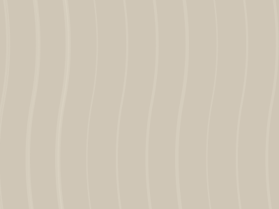

01 / Casa Pátio
Residencial · Natureza · Estudo conceitual
Um jardim no centro da vida.
Volumes horizontais se abrem para um pátio interno. Travertino, madeira clara, vidro e vegetação compõem uma casa imaginária que busca dissolver o limite entre dentro e fora.
02 / Explorar a planta
Uma casa para percorrer.
Selecione um ambiente da planta conceitual e conheça seus materiais e sua relação com os demais espaços. A representação é ilustrativa, não um documento técnico.
Pátio interno
O jardim organiza a casa ao redor da luz natural, da vegetação e da água.
Vegetação · Água · Travertino

03 / Materiais
A textura como parte da arquitetura.
Pedra clara, madeira, transparência e vegetação se complementam para construir uma atmosfera calma e duradoura.
Voltar às obras